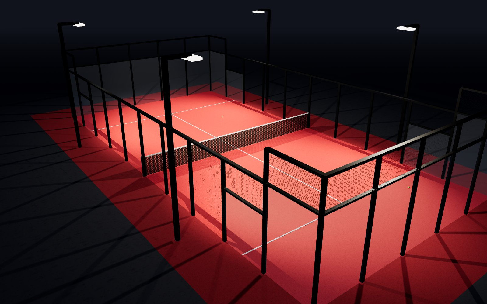
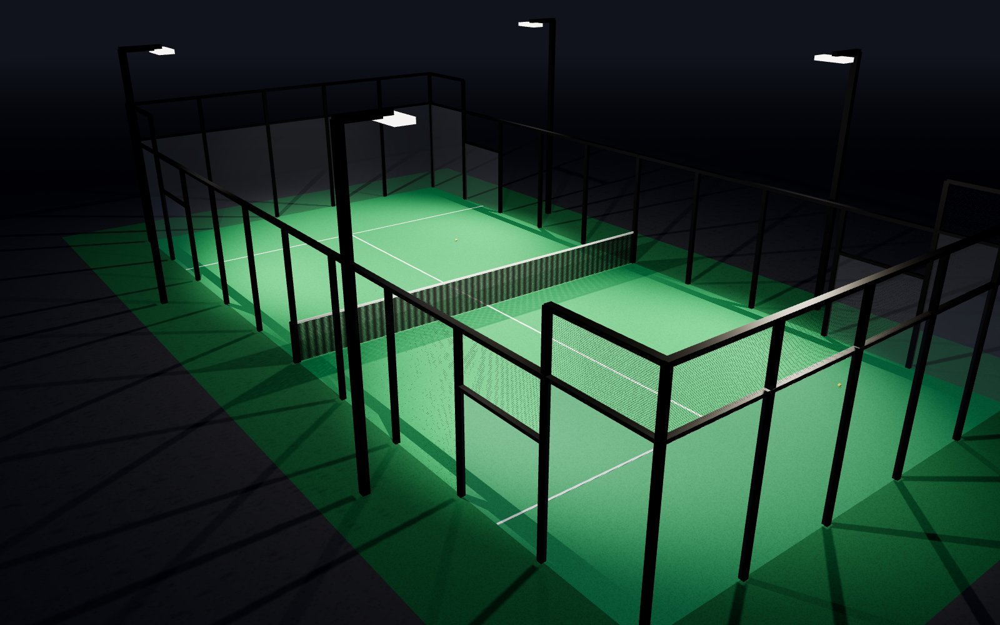
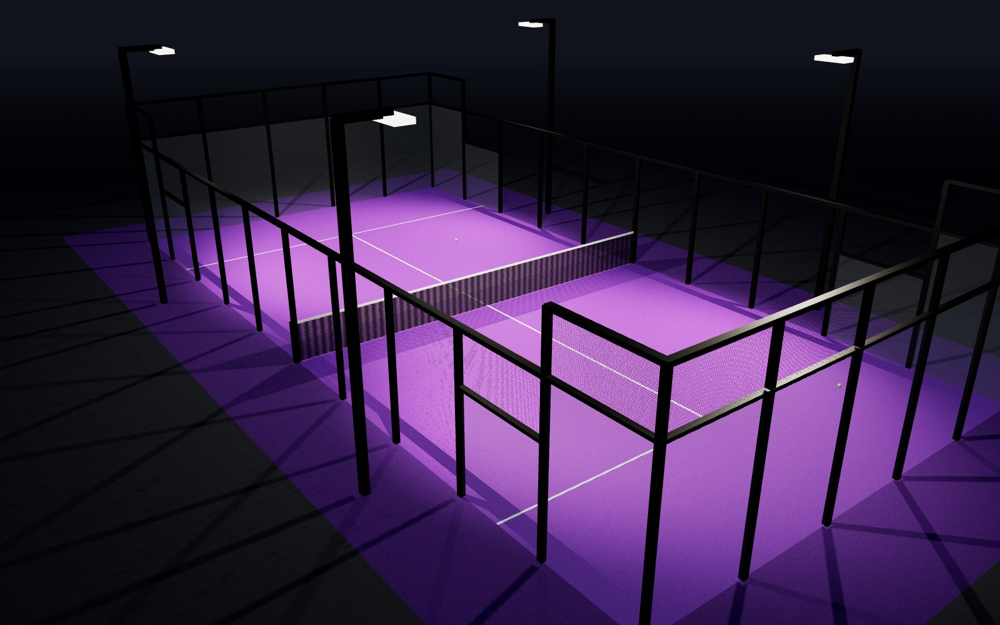

1-es pálya
Piros pálya
Az energia pályája. Gyors meccsekhez, pörgős esti játékhoz – itt mindig nagy a lendület.
Ezt foglalom →Budapest · 3 pálya
A Play Padel Budapest padel-otthona. Három pálya – piros, zöld és lila –, kezdőknek és rutinos játékosoknak egyaránt.
Pályáink
Mindhárom pályánk szabványos, 20×10 méteres padelpálya. Válaszd azt, amelyik a kedvenced – vagy próbáld ki mindet!

Az energia pályája. Gyors meccsekhez, pörgős esti játékhoz – itt mindig nagy a lendület.
Ezt foglalom →
A klasszikus. Ideális első alkalomra, edzésre és nyugodt, hosszú labdameneteket kedvelőknek.
Ezt foglalom →
A különleges. Baráti bajnokságok, céges csapatépítők és hétvégi kihívások kedvelt helyszíne.
Ezt foglalom →Galéria
Látványtervek a pályáinkról – esti világításban, üvegfalakkal, ahogy játék közben látod őket.
A padelről
A padel ütős sport, amely a tenisz és a squash legjobb részeit ötvözi. Mindig párosban, két kettes csapat játssza egy 20×10 méteres, üvegfalakkal és dróthálóval körbezárt pályán.
A sportág 1969-ben Mexikóban született, Spanyolországban vált igazán népszerűvé, ma pedig a világ egyik leggyorsabban növekvő sportja – Magyarországon is egyre többen szeretnek bele.
A titka egyszerű: könnyű megtanulni, már az első órán élvezetes labdamenetek alakulnak ki, és közben remek társasági program.
A padelütő húrok nélküli, lyuggatott, habtöltésű ütő. Rövidebb a teniszütőnél, így könnyebb irányítani.
A labda a falakról visszapattanva is játékban marad – ettől lesznek hosszúak és látványosak a labdamenetek.
Négyen játszotok, ezért a padel igazi csapatsport – a jó kommunikáció legalább annyit ér, mint egy nagy ütés.
Nem kell hozzá teniszmúlt. A kis pálya és az alulról adogatás miatt kortól és edzettségtől függetlenül élvezhető.
Működés
A pályát háló osztja két részre. Mindkét térfélen egy-egy kétfős csapat áll.
A játék adogatással indul: a labdát egyet pattintod, majd derékmagasság alatt, átlósan ütöd át.
A labda a saját térfeleden egyszer pattanhat a földön, utána a falról is visszajöhet – akkor is visszaütheted.
15 – 30 – 40 – játék. Hat nyert játék egy szett, általában két nyert szett a győzelem.
Szabályok
Nem kell mindent fejből tudni az első játékhoz – ezekkel az alapokkal már bátran beállhatsz.
Árak
Az árak egy pályára, egy órára vonatkoznak – a négy játékos között szépen eloszlik.
Hétköznap 7:00–16:00
8 000 Ft / óra
kb. 2 000 Ft / fő
Hétköznap 16:00–22:00
12 000 Ft / óra
kb. 3 000 Ft / fő
Szombat–vasárnap 8:00–22:00
10 000 Ft / óra
kb. 2 500 Ft / fő
Ütőbérlés: 1 000 Ft / db · Labda (3 db): 2 500 Ft · Kezdő edzés edzővel: érdeklődj!
Foglalás
Válassz napot, majd kattints egy szabad időpontra a kívánt pálya oszlopában.
Kapcsolat
Kérdésed van, csapatépítőt vagy bajnokságot szerveznél? Írj vagy hívj minket bátran.